01Getting started
The CMMS (Computerised Maintenance Management System) keeps GFB's machine register, repair jobs, preventive maintenance, calibration, incidents, contracts, spare parts and purchasing in one place, as records for ISO 22000, HACCP and GMP audits.
Open the system
- Computer: open gfbtammy-droid.github.io/gfb-cmms in Chrome or Edge. Bookmark it.
- Phone: scan the QR code you were given, or open the same link. In Chrome tap ⋮ → Add to Home screen (iPhone Safari: Share → Add to Home Screen) so it opens like an app.
Language: English or Bahasa Malaysia
Tap BM / EN at the top of the screen (on the sign-in screen, or next to User guide on a computer). On a phone, tap your name → Language / Bahasa. Your choice is remembered on that device. Records you type stay as typed, and printed forms (F45, L04, PO, DOSH reports) and Excel / CSV downloads stay in English to match the controlled documents.
First time: request access
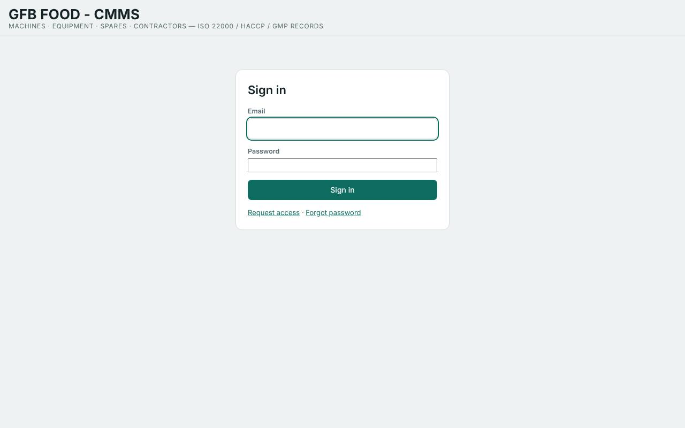
- On the sign-in screen click Request access.
- Enter your name, your work email and a password of your choice.
- You will see Waiting for approval. Tell the admin (Tammy) so she can give you a role.
- Once approved, sign in with your email and password.
Forgot your password
Click Forgot password on the sign-in screen, enter your email and follow the link sent to you. To change a password you know, click your name at the top right → Change password.
Who can do what
| Role | Can do |
|---|---|
| Viewer | Look at everything they have access to. Cannot add or change records. |
| Editor | Add and update assets, work orders, calibration records, spares, contracts and contractors; raise purchase requests, issue POs and receive goods; attach photos or PDFs. |
| Admin | Everything an editor does, plus approve users, delete records, change Settings and download backups. |
| Can approve purchase requests (extra tick) | Approve or reject purchase requests. Each decision is recorded with the approver's name, date and time. |
| Incident access (extra tick) | Needed to see the Incidents tab, because it holds injury and personal details. Given only to the people who handle incidents. |
02Finding your way around
Every screen works the same way, so once you know one module you know them all.
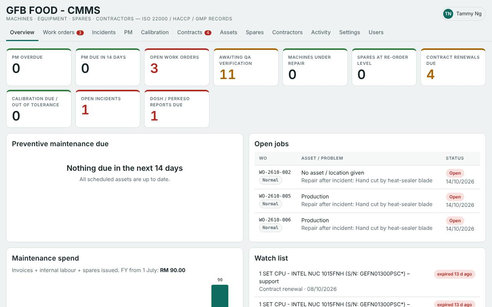
- Tabs along the top switch modules. A red number on a tab (e.g. 3) means items need action.
- Search box and filters above each list narrow it down: type part of a code, name, serial or WO number.
- Click a row to open the record in a panel on the right (on a phone it fills the screen). Close it with × or the Esc key.
- Buttons at the top of a record do the actions for that record: edit, print, record a check, and so on.
- Forms open in a pop-up. Fields marked * are required. Click Save at the bottom.
- Colours: green fine, amber due soon, red overdue or failed, blue in progress / informational.
Save as draft
Work orders and incident reports have Save as draft beside Save. A draft keeps what you typed without issuing a number, so you can finish it later. Drafts show a Draft label in the list. Open it and click Continue draft to finish. An admin can remove an unwanted draft with Discard draft.
Every change is recorded
Each record shows a Change history at the bottom (who changed what and when), and the Activity tab lists all changes across the system. This is your audit trail, so you do not need a separate logbook.
Attachments
Most records have an Attachments section. Choose the attachment type, then Take photo (phone camera) or Attach PDF or photo. Use this for service reports, invoices, certificates, manuals and photos.
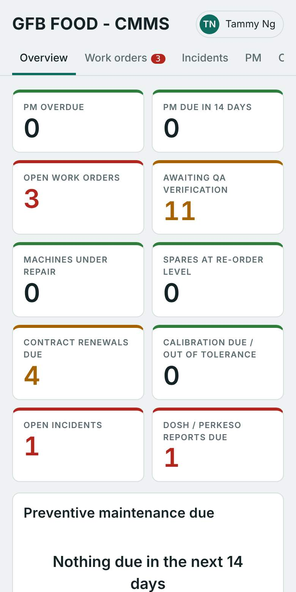
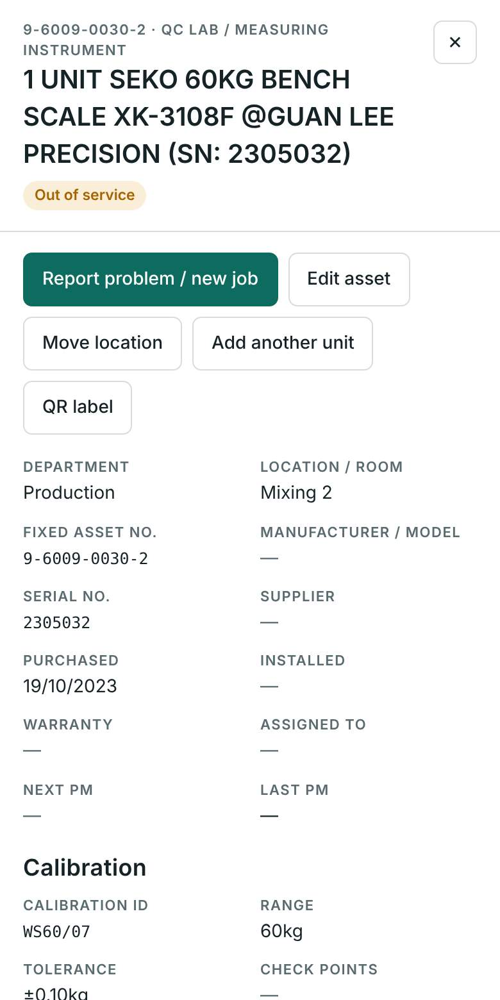
03Assets (machine & equipment register)
Every machine, instrument, aircon unit, forklift, computer and piece of equipment, with its location, maker, dates and history.
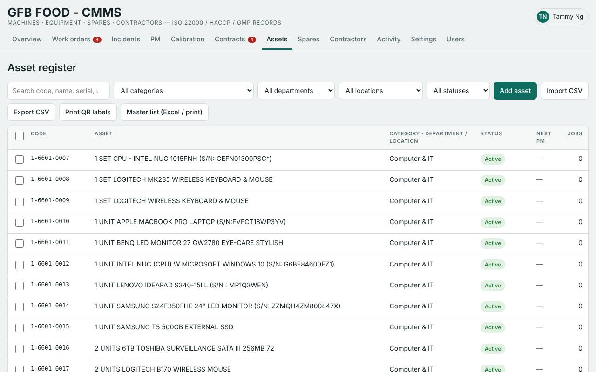
Add an asset
- Click Add asset.
- Fill in Asset code and Asset name (required), then category, department, location and status.
- Under Make & purchase add manufacturer, model, serial no., supplier, purchase date, install / commissioning date and warranty end date.
- Under Maintenance schedule choose the PM frequency and type the PM checklist (one task per line).
- For measuring instruments, fill the Calibration section (see chapter 6).
- Click Save.
The asset record
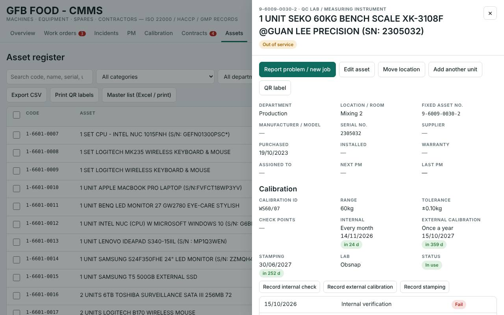
- Report problem / new job raises a work order for this machine.
- Log PM records a preventive maintenance done.
- Move location changes department / location and keeps the move in the history.
- QR label prints a label for this machine.
- Attach the manual, technical spec and warranty card under Attachments (choose the matching type), so they are on hand when the machine breaks down.
QR labels
Click Print QR labels on the Assets tab (prints the assets currently filtered) or QR label on one asset. Stick the label on the machine. Anyone with an account can scan it with a phone camera to open that machine's record, see its history and report a problem.
Machine / Equipment Master List
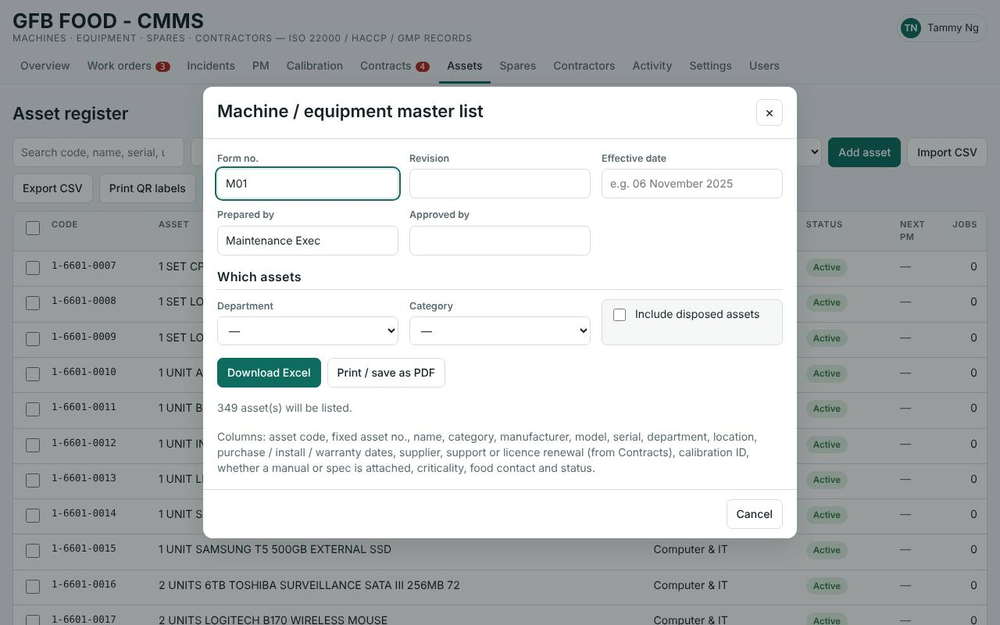
- On the Assets tab click Master list (Excel / print).
- Fill in the form no., revision, effective date, prepared by and approved by (saved for next time).
- Optionally pick a department or category. Tick Include disposed assets if needed.
- Click Download Excel or Print / save as PDF.
The list shows codes, names, maker, model, serial, location, purchase / install / warranty dates, supplier, support or licence renewal, calibration ID and whether a manual or spec is attached (a red No means one is missing).
Other tools
- Set department & location for many assets: tick the boxes at the left of the rows, then use Set department & location.
- Export CSV downloads the register for Excel. Import CSV (editors) adds many assets at once from the downloadable template.
04Work orders (repair & maintenance jobs)
Every breakdown, repair, PM, calibration, inspection or modification job gets a work order (WO). The completed WO is the F45 Machine Maintenance Upkeep Report.
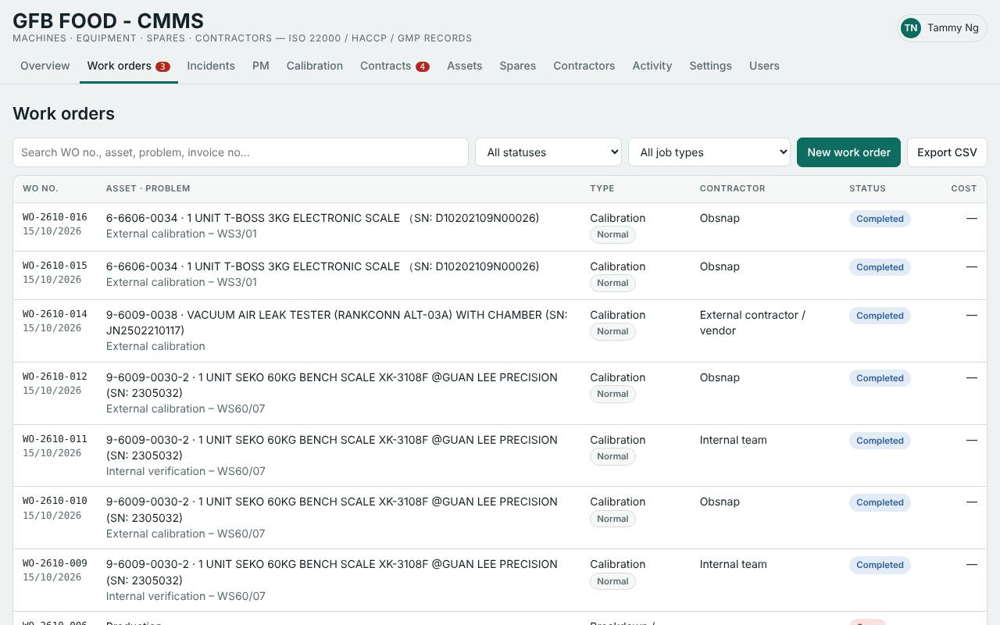
Raise a work order
- Click New work order (or Report problem / new job on an asset, or scan the machine's QR label).
- Choose the Job type: Breakdown / repair, Preventive maintenance, Calibration, Inspection, or Installation / modification.
- Choose the machine if there is one. Machine, department and location are optional, so jobs like "toilet leaking" can be raised without an asset.
- Type the Problem / reason, choose the priority (Critical, High, Normal, Low) and click Save. A WO number such as WO-2610-001 is issued.
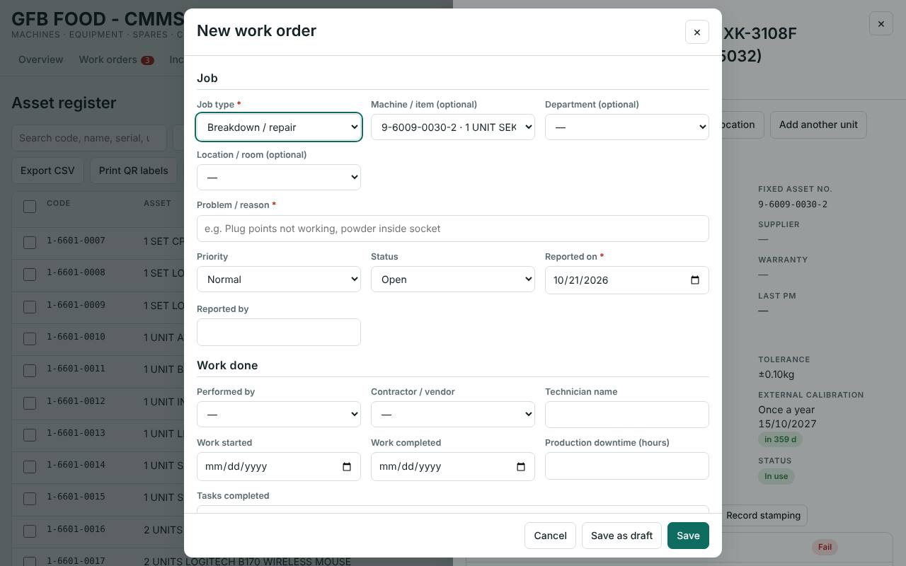
Update the job as it progresses
Open the WO and click Update job. Move the status along:
Open → In progress → Waiting parts → Completed → Verified
- Work done: internal team or external contractor, contractor name, technician, start and completion dates, downtime hours, tasks completed.
- Contractor not in the list? Pick ＋ Add new contractor / vendor… at the bottom of the dropdown, type the name and click Add.
- Food safety & compliance (F45 section 3): tick the hygiene, safety, isolation, PPE, foreign-matter and hygiene-clearance checks.
- Parts & consumables used from store: click Add spare part, choose the part and quantity. Stock is deducted automatically when you save. A part not yet in the store list can be created on the spot with ＋ New part (not in list yet).
- Supplier report & invoice: report no., invoice no., date and amount, plus internal labour cost.
- Attachments: attach the service report, invoice and before / after photos.
QA verification and the F45 report
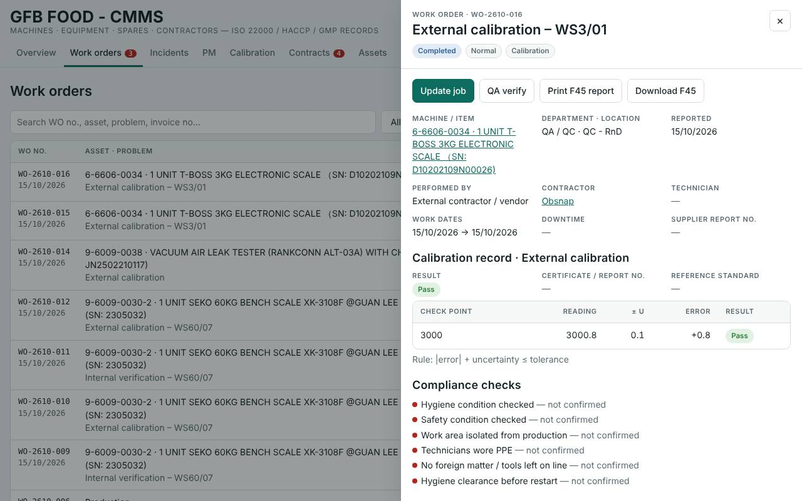
- When the job is Completed, QA / HOD opens it and clicks QA verify.
- Confirm no tools or debris are left on the line and that hygiene clearance was given, enter your name and date, and save. The status becomes Verified.
- Click Print F45 report (or Download F45) for the signed copy in your F45 file.
05Preventive maintenance (PM)
Scheduled servicing for machines, aircon, forklifts and so on, based on each asset's PM frequency.
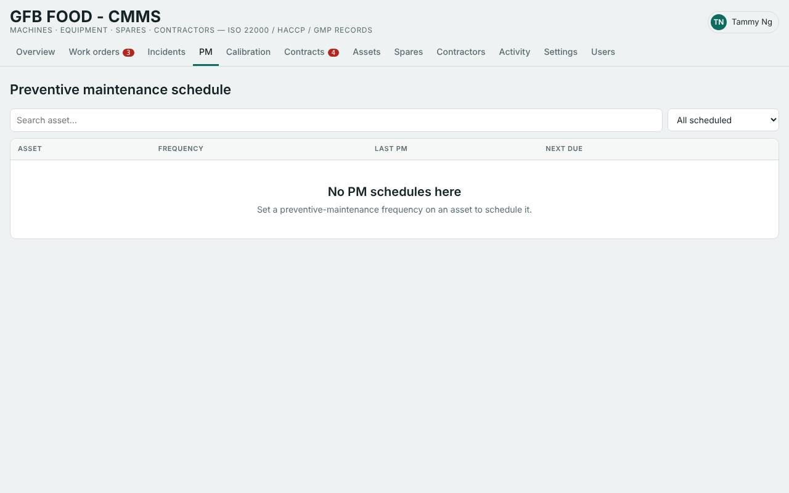
- Set the PM frequency and checklist on each asset (Assets → open → Edit asset → Maintenance schedule).
- Enter the Last PM done date once, so the system can work out the next one.
- When PM is done, open the asset and click Log PM, or raise a WO with job type Preventive maintenance. The next due date moves forward automatically.
Assets due within 14 days show amber and overdue ones red, on this tab and on the Overview.
06Calibration
QA's calibration master list (Form L04): internal verification, external calibration and Metrology stamping, with readings checked against each instrument's tolerance.
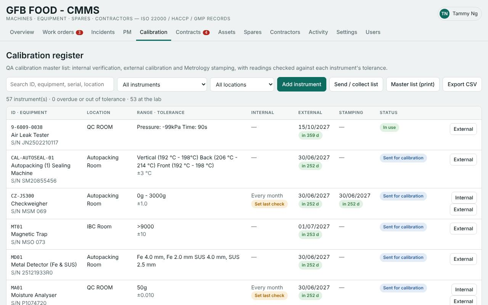
Reading the register
- Internal: frequency and next internal check. Set last check means no internal check is recorded yet. Record one to start the countdown.
- External / Stamping: next calibration and stamping dates. They turn amber a set number of days before (Settings → Calibration, default 30) and red when overdue.
- Status: In use, Sent for calibration or Out of tolerance.
- Use the filter to show Due / overdue, Sent for calibration, Out of tolerance or Internal check date missing.
Set up an instrument
Click Add instrument (or edit an existing asset) and fill the Calibration section: Calibration ID (e.g. WS60/01), equipment type, range, tolerance (e.g. ±0.10kg), check points (e.g. 20kg, 40kg, 60kg), internal and external frequency, next external calibration and stamping dates, and the calibration lab.
Record an internal check or external calibration
- On the register click Internal or External on the instrument's row (or open the instrument and use Record internal check / Record external calibration / Record stamping).
- A calibration work order opens, already filled in. For external, enter the certificate no. and attach the certificate PDF under Attachments.
- For each check point type the Reading. The Error and Pass / Fail fill in automatically against the tolerance.
- If the certificate shows a measurement uncertainty, type it in ± Uncertainty (optional).
- Click Save. The next due date moves forward automatically.
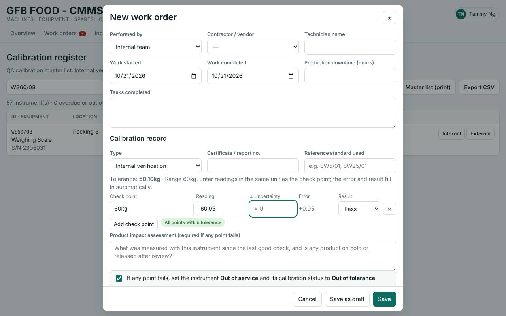
Send / collect list for the calibration lab
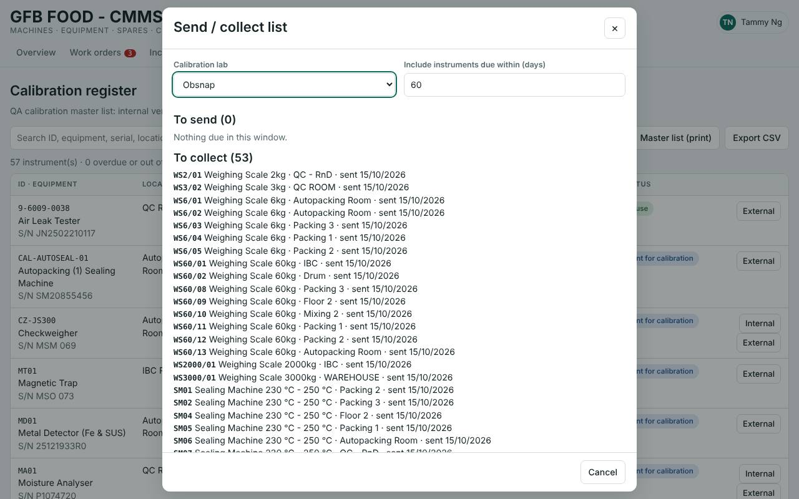
- Click Send / collect list, choose the lab (e.g. Obsnap) and how many days ahead to include.
- Untick anything not going this round, then Print list ("TO COLLECT / PASS TO OBSNAP") for the lab's driver.
- Click Mark ticked as sent to lab. Those instruments show Sent for calibration.
- When certificates come back, record each one with External. The status returns to In use.
Calibration Master List (Form L04)
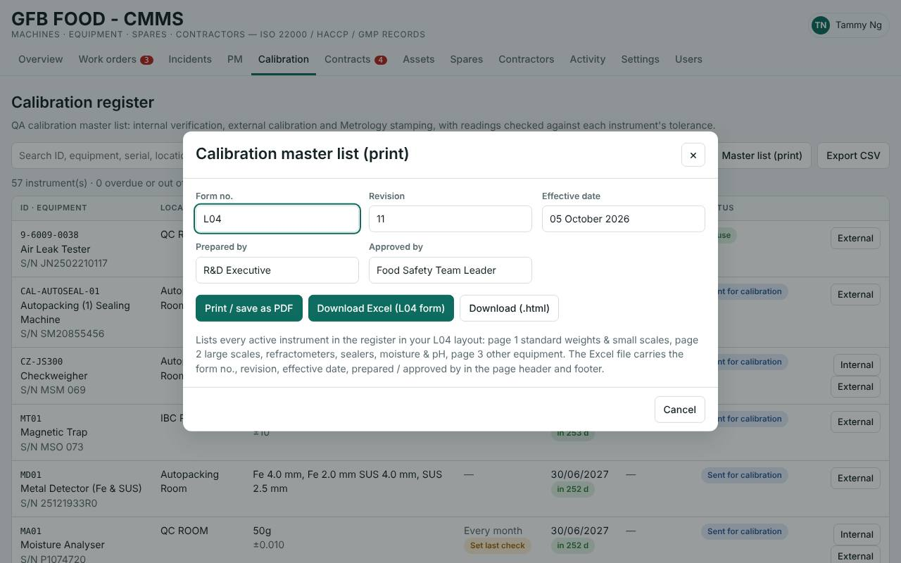
- Click Master list (print).
- Check the form no., revision, effective date, prepared by and approved by.
- Click Download Excel (L04 form) for the Excel file in the L04 layout (3 pages, header and footer filled in), or Print / save as PDF.
Export CSV gives the full register, including last internal check dates, for your own analysis.
07Incidents & accidents
Register of accidents, dangerous occurrences, occupational poisoning and disease, near misses and property damage, with DOSH and PERKESO deadlines. Only people with incident access see this tab.
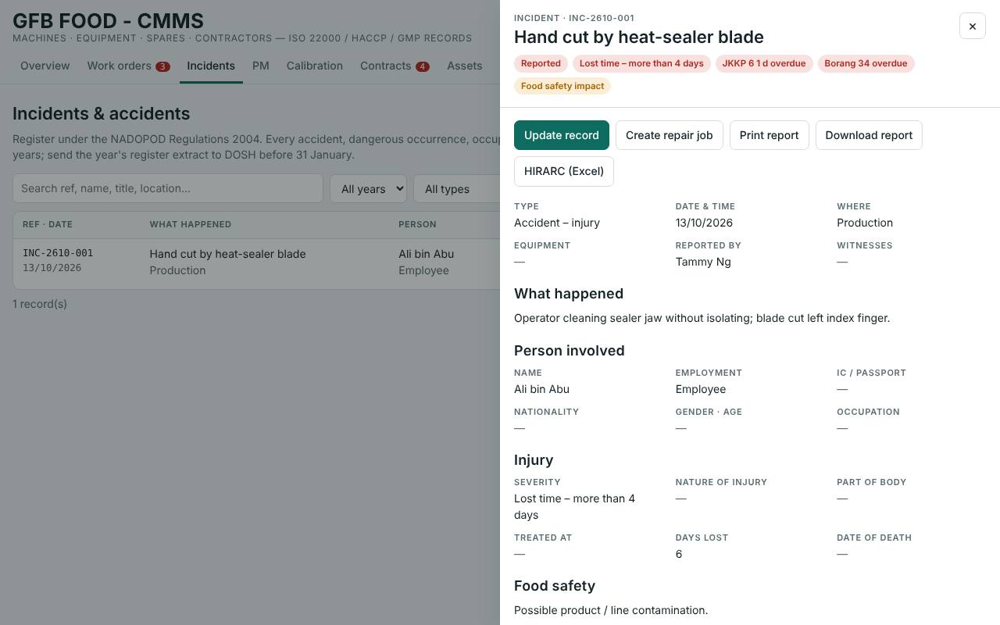
Report an incident
- Go to Incidents → Report incident.
- Choose the type, date and time, where it happened and the equipment involved, and describe what happened.
- For injuries fill in the person involved and the injury details (severity, days lost, where treated).
- Note any food safety impact (e.g. possible product contamination).
- Save. The system works out whether it is notifiable and shows the DOSH and PERKESO due dates. Overdue ones show red.
Corrective actions and repair jobs
- Under Corrective & preventive actions click Add action: action, owner, due date and status. Attach photo or PDF evidence if you have it (optional).
- If the incident needs a repair, click Create repair job (or Create work order next to an action). A linked WO is raised, and its progress and attachments show under the incident.
Reports
- Print report / Download report: the incident report for one case.
- HIRARC (Excel) on an incident, or Reports → HIRARC (.xlsx): fills your HIRARC Form 2024 template from the risk assessment section of the incidents.
- Reports → register download for the yearly DOSH extract.
08Contracts & renewals
Support agreements (AMC), software licences and subscriptions, warranty extensions, domain / hosting, antivirus, internet and non-IT service contracts such as pest control.
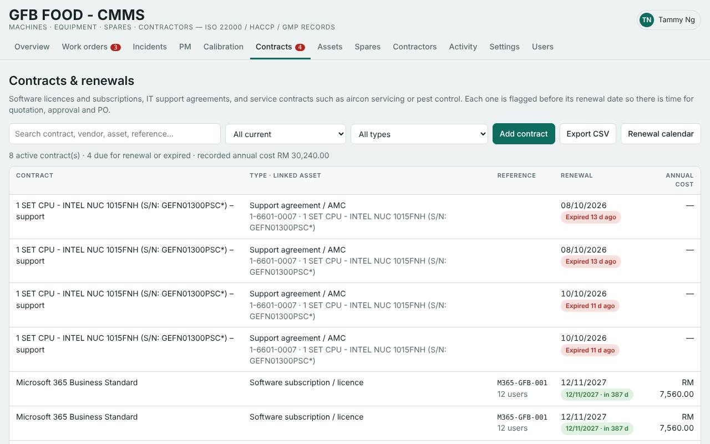
- Click Add contract. Enter the name, type, vendor, linked asset (optional), start and end dates, billing and cost.
- Set Remind me (days before renewal). Default is 60 days. The contract turns amber from that date and shows on the Contracts tab badge and Overview.
- When renewed, open it and click Record renewal. Enter the new end date and cost, and attach the new invoice or certificate.
- Renewal calendar lists renewals for the next 12 months or a financial year (July to June) with estimated cost, for budgeting. Print it or download it as CSV.
09Part & Consumables (store)
Spare parts and consumables kept for maintenance, with stock on hand and re-order levels.
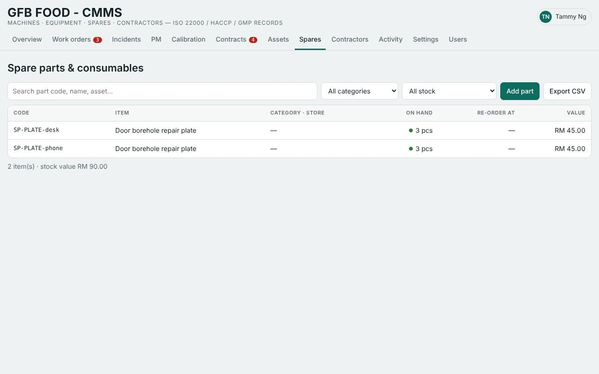
- Add part: choose the category first and the part code fills in as that category's running number: FAC-0001 building & facilities, MCH-0001 machines & tools, FLT-0001 forklift & reach truck, OFC-0001 office equipment & IT (PCs included). For existing parts, type your own code instead. Then enter the name, choose the unit of measure (UOM) from the list (PCS, SET, UNIT, BOX, ROLL, METRE, LITRE, KG …). If the unit you need is missing, pick ＋ Add new UOM… at the bottom of the list and type it; it is added for everyone, category, unit, unit cost, re-order level, usual supplier and opening stock.
- Open a part and use Receive (stock in, with DO / invoice no.), Issue (stock out to an asset) or Adjust (enter the counted quantity after a stock take).
- Parts used on a work order are deducted automatically.
- When stock falls to the re-order level, it shows on the Overview tile Parts at re-order level.
10Purchasing (PR → approval → PO → goods received)
Buy spare parts, consumables, tools and services with a full record: who asked, who approved and when, the purchase order, what arrived, and the SAP B1 reference of the invoice.
| Status | Meaning | Who acts next |
|---|---|---|
| Draft | Saved, not yet submitted | Requester: finish and submit |
| Pending approval | Waiting for an approver | Approver: approve or reject |
| Approved | Approved, PO not issued yet | Purchaser: create the PO |
| Rejected | Not approved (reason shown) | Requester: revise & resubmit, or cancel |
| PO issued / Partly received | Ordered from the supplier | Store: receive goods when delivered |
| Received | Everything delivered | Accounts: key the invoice into SAP B1, then record the SAP ref here |
1. Raise a purchase request (PR)
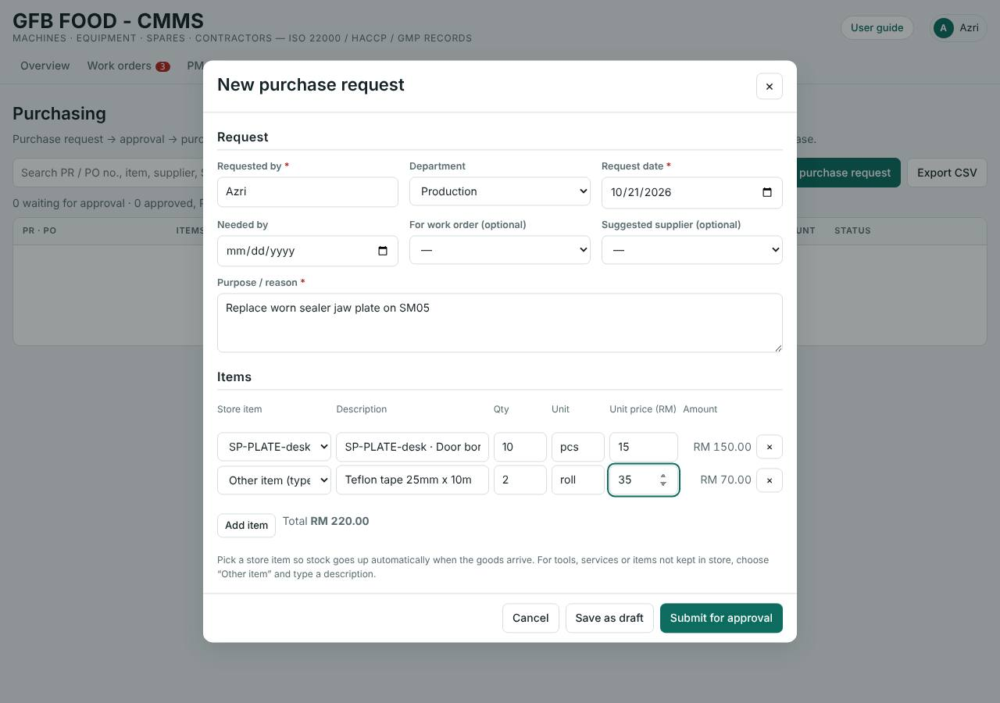
- Go to Purchasing → New purchase request. Shortcuts: Raise purchase request on a work order or a spare part, or Raise PR for low stock on the Part & Consumables tab (fills in every part at or below its re-order level).
- Fill in department, needed-by date, the work order it is for (optional) and the purpose / reason.
- Add the items. For each line choose:
- an existing item from Part & Consumables, or
- ＋ New item, type its name and pick its category. It is given an item code automatically (e.g. MCH-0005) and added to Part & Consumables when you submit, or
- Service / non-stock for repairs, labour or one-off tools not kept in store (not added to the list).
- Click Submit for approval (or Save as draft). A PR number such as PR-2610-001 is issued.
2. Approve or reject (approvers only)
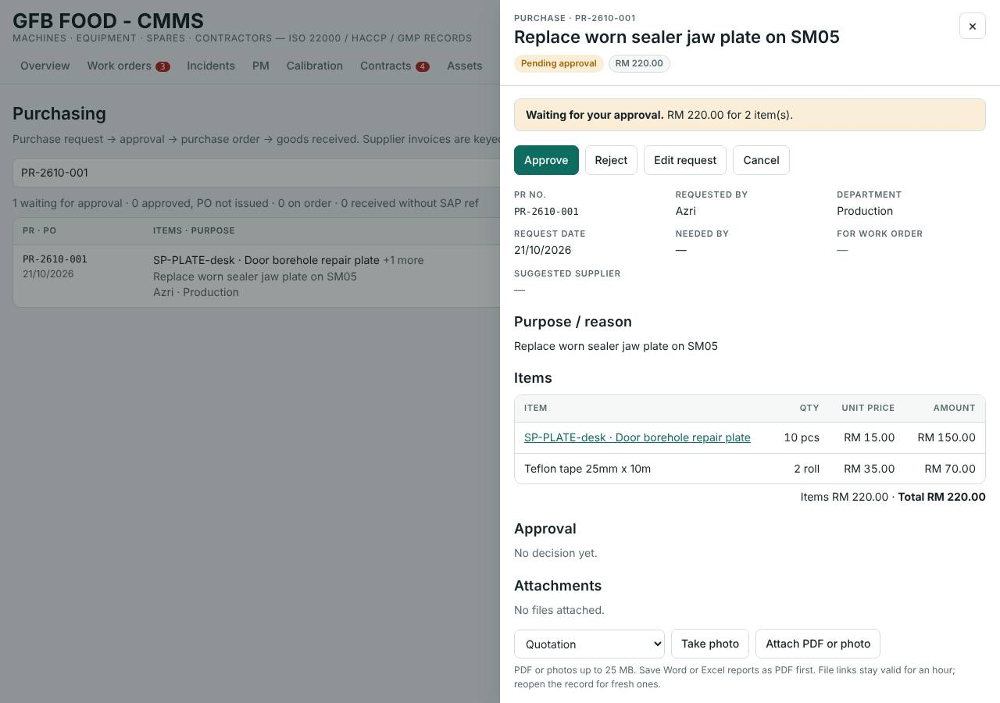
- Approvers are the people the admin has ticked as Can approve purchase requests. The Purchasing tab badge and the Overview tile Purchase requests awaiting approval show what is waiting.
- Open the request, check the items and amount, then Approve (note optional) or Reject (reason required).
- The decision is stored with the approver's name, date and time and the approved amount. The system itself checks this, so nobody else can mark a request approved.
3. Create the purchase order (PO)
- On an approved request click Create purchase order.
- Choose the supplier (new suppliers can be added from the dropdown), PO date, delivery date, payment terms, quotation reference and deliver-to address. Enter the confirmed unit prices from the quotation and any delivery charge or tax as Other charges.
- Click Issue PO. A PO number such as PO-2610-001 is issued. Use Print PO or Download PO to send it to the supplier.
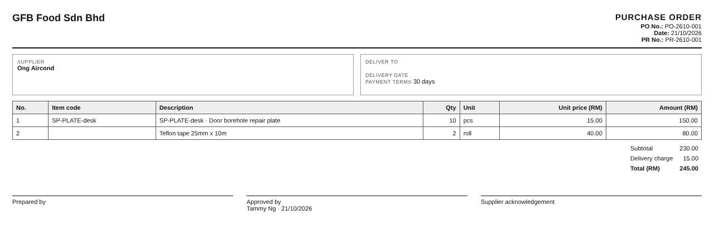
4. Receive the goods
- When the delivery arrives, open the purchase and click Receive goods.
- Enter the date, the DO number and the quantity received for each item (the outstanding quantity is filled in). Partial deliveries are fine: the status becomes Partly received until everything arrives.
- Store items are added to stock automatically, with the PO and DO number in the part's stock movements.
- Attach a photo of the DO under Attachments.
5. Record the SAP B1 reference
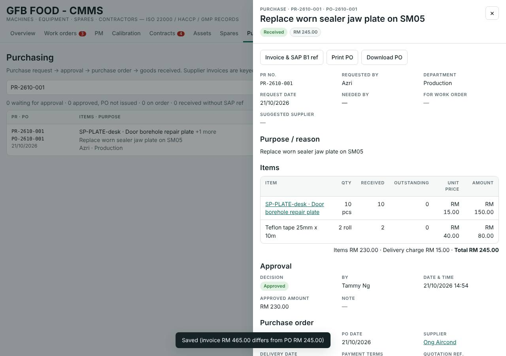
After accounts key the supplier invoice into SAP B1, open the purchase and click Invoice & SAP B1 ref. Enter the supplier invoice no., date and amount and the SAP B1 reference number (A/P invoice or GRPO document no.). Received purchases without a SAP reference are flagged SAP ref missing; use the filter Received, SAP ref missing to chase them. If the invoice amount differs from the PO, the record says so.
Other
- Cancel a request or PO that is no longer needed (a reason is required). The record is kept.
- Part & Consumables shows an On order quantity, and each part lists its open purchases.
- Export CSV on the Purchasing tab gives every PR / PO with approval, receiving, invoice and SAP B1 reference for reconciliation.
11Contractors & vendors
Service contractors and suppliers, their approval status and safety briefing.
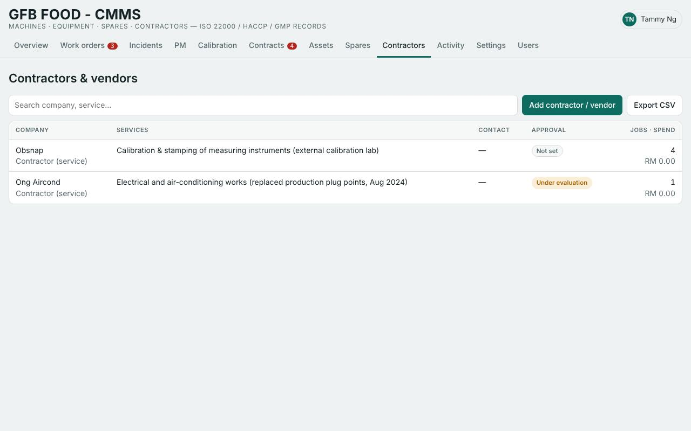
- Add contractor / vendor: company, type, services, contact person, phone, email, approved-supplier status, next evaluation date, and whether the contractor safety instructions (Rev 2025-01) were signed.
- Contractors added quickly from a dropdown start as Under evaluation. Complete their details here.
- Open a contractor to see all jobs they did.
12For admins: Settings, users, backups
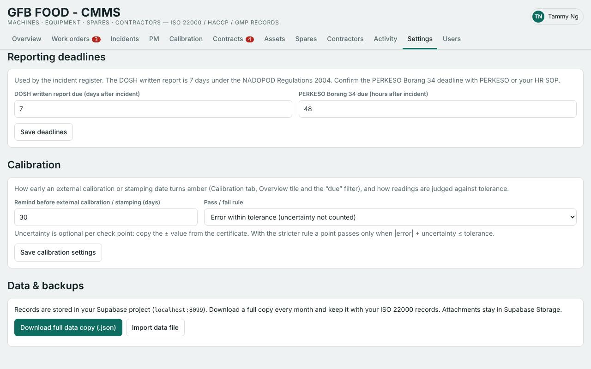
Settings
- Locations: add rooms and areas and link each to a department.
- Lists used in forms: asset categories, departments and spare-part categories (one per line).
- Part & consumable codes: the prefix used for each spare-part category's running number (FAC, MCH, FLT, OFC).
- Reporting deadlines: DOSH written report days and PERKESO Borang 34 hours.
- Purchase order: company address, phone, fax, email, registration no., Sales Tax ID and TIN (printed with the GFB logo), default payment terms and deliver-to address, and the note printed at the bottom of every PO.
- Calibration: how many days before an external calibration / stamping date it turns amber, and the pass / fail rule (error only, or error + uncertainty).
- Data & backups: click Download full data copy (.json) every month and keep it with your ISO 22000 records.
Admin corrections
- Assets, work orders (even completed / verified), incidents (even closed), contracts, parts and contractors can be edited at any time with Edit / Update job / Update record.
- Purchases after the PO is issued (PO issued, Partly received, Received, Cancelled): admins see Edit (admin) to correct the request, items, prices, PO details or reopen a cancelled purchase. Each goods-received entry has Edit (date, DO no., note) and Undo receipt, which takes the quantity back out of stock so the delivery can be recorded again.
- Contract renewal history: admins can Edit or Delete a renewal entry.
- Every admin correction asks for a reason, which is saved in the record's change history with your name and time. The change history itself and stock movements cannot be edited, so the audit trail stays intact; correct stock with Stock count.
Users
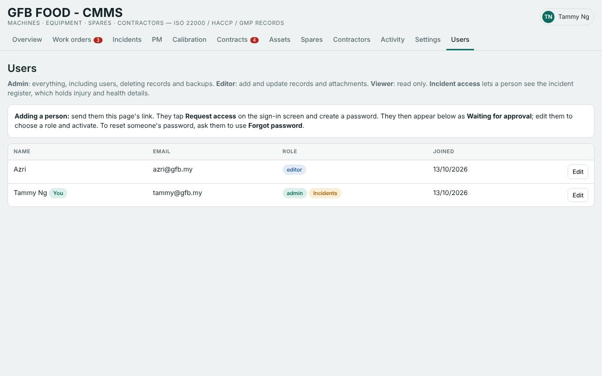
- Send the person the CMMS link. They click Request access.
- They appear as Waiting for approval. Click to edit, choose Viewer, Editor or Admin, tick Incident access only if they handle incidents, tick Can approve purchase requests only for the people who approve purchases, and activate.
- When someone leaves, deactivate their account the same way.
13Questions & troubleshooting
| Problem | What to do |
|---|---|
| A new feature mentioned by the admin is not showing | Refresh fully: Ctrl + F5 (Windows) or Ctrl + Shift + R. If the keyboard is not working, use the browser menu → Settings → clear cached images and files, then reopen. On a phone, close the app and open it again. |
| I cannot see the Incidents tab | You need incident access. Ask the admin. |
| The Save button does nothing / I see a red message | Read the message at the bottom of the form. It names the required field that is missing (e.g. impact assessment when a calibration point fails). |
| I made a mistake in a record | Open it and click Edit / Update job. The change is kept in the history. Only admins can delete records. |
| Scanning a QR label asks me to sign in | Sign in once on that phone. The record opens after that. |
| "Waiting for approval" after signing up | The admin has not activated your account yet. Ask them. |
| Is my data safe if my laptop breaks? | Yes. Records are stored online (Supabase), not on your computer. Admins also download a monthly backup. |
Questions about the system: contact the CMMS admin, Tammy Ng.